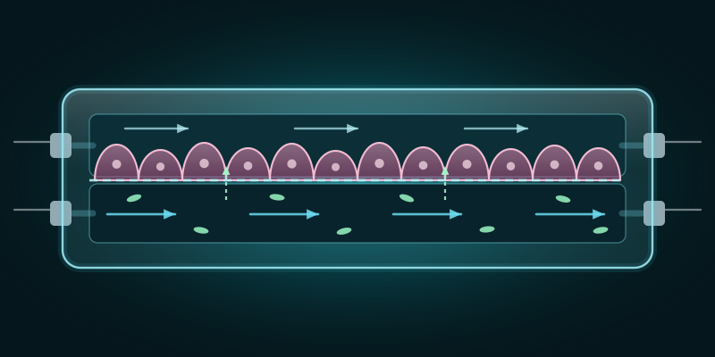
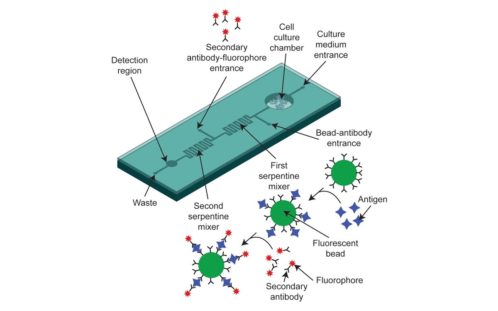
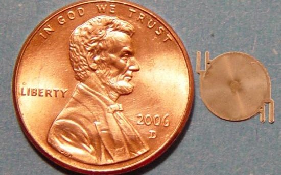

Research
Rather than treating each disease or tissue as a separate technology, we build reusable engineering platforms and apply them where spatial control and measurement over time matter.
Engineer
Microfluidic and organ-on-chip platforms that set the conditions living tissue experiences.
Model
Human tissues and organoids, grown alone or with microbes.
Measure
Continuous on-chip sensors that track what tissue secretes, such as albumin and cholesterol, over time.


Microbes and colorectal cancer
The colon is lined by epithelium that lives in constant contact with bacteria and the molecules they make. We build colon organoid models and microfluidic chips in which living bacteria and human epithelium share the same space, so their interactions can be controlled and measured.
Current work asks how bile salts, bacterial enzymes such as bile salt hydrolase, and other microbial metabolites influence bacterial colonization, host signaling and tumor behavior in colorectal cancer organoids.
Selected papers
- 2026
-
2024
Engineered bacterial therapeutics for detecting and treating CRC
Trends in Cancer 10(7): 588–597, 2024
- 2024
-
2018
A novel microfluidic colon with an extracellular matrix membrane
ACS Biomaterials Science and Engineering 4(4): 1377–1385, 2018

Liver–fat crosstalk
Fat tissue and the liver signal to each other constantly, and that conversation goes wrong in insulin resistance and fatty liver disease. We culture adipose and liver tissues on chip to study it with human and primary cells under flow.
Our perfused adipose tissue-chips carry preadipocytes differentiated into adipocytes, and adipocytes made insulin resistant. The insulin-resistant adipocytes take up less fatty acid, and rosiglitazone restores uptake. Our liver constructs combine several cell types, stay functional for weeks, and can be made insulin resistant to test strategies that restore insulin response.
Selected papers
-
2021
Investigation of insulin resistance through a multiorgan microfluidic organ-on-chip
Biomedical Materials 17(2): 025002, 2021
-
2020
A 3D human adipose tissue model within a microfluidic device
Lab on a Chip 21(2): 435–446, 2020
-
2020
Towards an insulin resistant adipose model on a chip
Cellular and Molecular Bioengineering 14(1): 89–99, 2020
-
2018
Establishment and characterization of a primary murine adipose tissue-chip
Biotechnology and Bioengineering 115(8): 1979–1987, 2018
-
2015
Long-term maintenance of a microfluidic 3D human liver sinusoid
Biotechnology and Bioengineering 113(1): 241–246, 2015

Microbiome and drug response
Gut bacteria change how drugs are absorbed and metabolized. Our intestine tissue chip grows a tight epithelial monolayer on a collagen membrane instead of the usual Transwell membrane, and we use it to study how gut bacteria modulate cytochrome P450 drug-metabolizing enzymes. Because many gut bacteria need low oxygen, we also built chips with local control of oxygen tension.
We pair these experiments with pharmacokinetic models to understand how bacteria alter drug exposure, for example for tacrolimus and sulfasalazine.
Selected papers
-
2024
Advanced Therapeutics 7(8): 2300449, 2024
-
2022
Causative role of anoxic environment in bacterial regulation of human intestinal function
Cellular and Molecular Bioengineering 15(5): 493–504, 2022
- 2021
-
2016
New technologies in drug metabolism and toxicity screening: organ-to-organ interaction
Expert Opinion on Drug Metabolism & Toxicology 12(5): 475–477, 2016
-
2013
Stem Cell Research & Therapy 4(S1): S16, 2013

On-chip sensing
Tissue on a chip changes over days and weeks, and the small volumes make proteins and small molecules hard to measure. We build assays into the chip that read out what cells secrete in real time, without stopping the experiment. Bead-based assays run in line with the culture chamber and measure secreted proteins and metabolites, such as albumin and cholesterol.
Measuring over time turns an organ-on-chip from a single snapshot into a record of how tissue responds to drugs, microbes and nutrients.
Selected papers
-
2019
Real-time measurement of cholesterol secreted by human hepatocytes using a novel microfluidic assay
Technology 6(03n04): 135–141, 2019
-
2017
A microfluidic in-line ELISA for measuring secreted proteins under perfusion
Biomedical Microdevices 19(4): 101, 2017
-
2014
A highly sensitive microsphere-based assay for early detection of Type I diabetes
Technology 2(3): 200–205, 2014
-
2011
Microparticles and Microfluidics Merged: Perspectives of Highly Sensitive Diagnostic Detection
Microchimica Acta 176(3-4): 251–269, 2011

Other and earlier projects
Past and collaborative projects include a patient-derived pancreatic cancer-on-a-chip for testing combination drugs, a point-of-care saliva test for periodontitis, analysis of volatile compounds in breath and other samples, and microfabricated columns for gas chromatography.
Watch and read